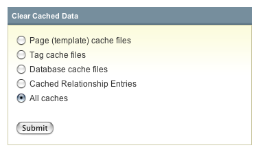

Clear Cached Data Files
Control Panel Location: Admin > Utilities > Clear Cached Data Files
This section of the Control Panel allows you clear the cached data for the different types of caching that are available.

Choose which type of cache you would like to clear:
- Page (template) cache files: This lets you clear out page or template caching.
- Tag cache files: This lets you clear the cached output of individual tags.
- Database cache files: This lets you clear the database query caches.
- Cached Relationship Entries: Related entries are cached, this empties them so they can be refreshed.
- All caches: You may also clear all caches at the same time.